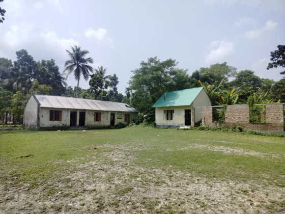

Committed to building a modern, skilled, and enlightened generation

"Education is our core light. We are committed to fostering a modern, tech- enabled generation that will lead the nation and society forward."
Welcome to our school website. Here you will find all the latest updates, notices, and activities of our institution.
Baliadanga Girls' School is a prominent educational institution established in 1999. Since its inception, the school has been dedicated to empowering young girls through quality education and moral values. Over the years, it has played a vital role in the local community by promoting female education and creating a supportive learning environment With a dedicated teaching staff and a focus on both academic excellence and extracurricular activities, the school continues to inspire and shape the futures of its students, helping them grow into confident and responsible individuals.